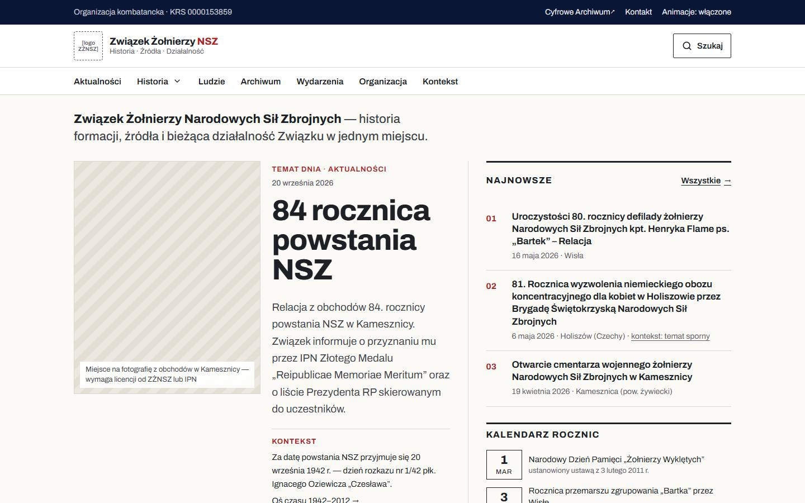
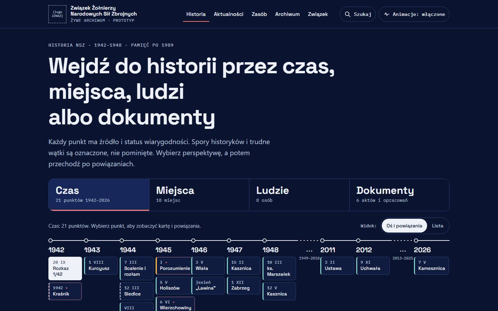
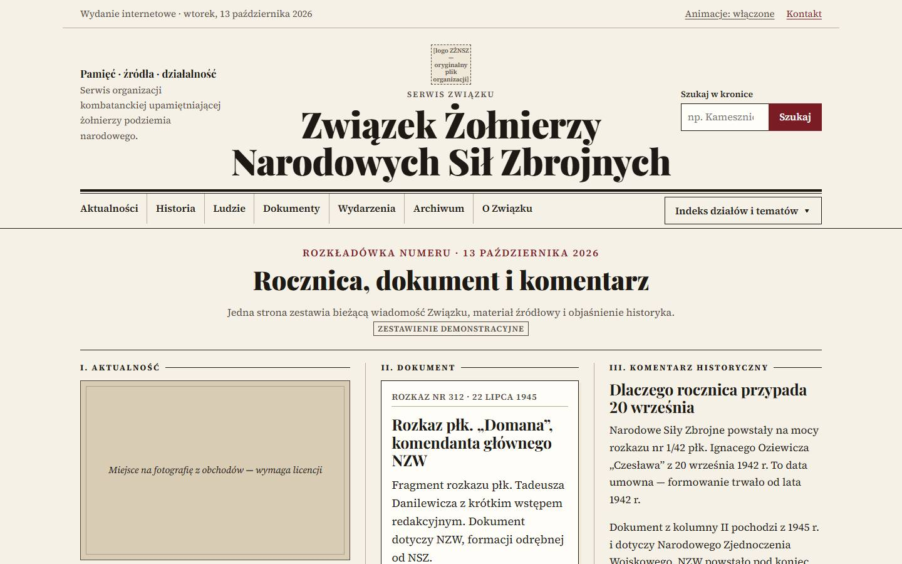
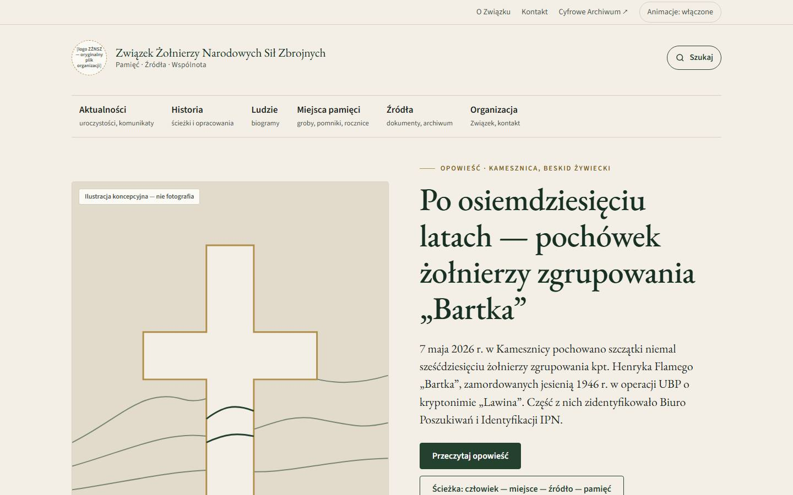
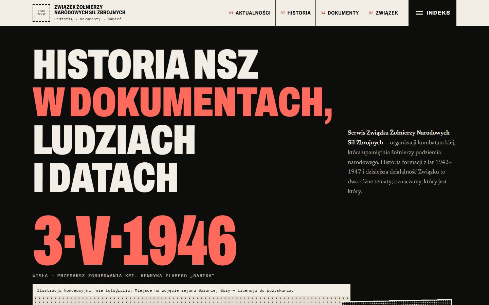

-

A · 01Instytucja 2.0
Nowoczesny portal redakcyjny: ciepła biel, grafit i karmin, asymetryczny temat dnia oraz indeks tematów łączący bieżące wiadomości z kontekstem historycznym.
-

B · 02Żywe Archiwum
Eksploracja zamiast banera: wybór „czas / miejsca / ludzie / dokumenty”, oś czasu z 45 punktami, źródłami i statusem wiarygodności oraz równoważny widok listy.
-

C · 03Kronika Niepodległości
Tradycyjny układ gazetowy na papierowym tle: szeryfowe nagłówki, cienkie linie, rozkładówka numeru (aktualność + dokument + komentarz) i kalendarium „Tego dnia”.
-

D · 04Dziedzictwo i Wspólnota
Spokojna kompozycja na kamiennym tle z ciemną zielenią: jedna opowieść na pierwszym ekranie i ścieżki „człowiek — miejsce — źródło — pamięć” z jawnym stanem weryfikacji.
-

E · 05Archiwum Awangardowe
Radykalna forma graficzna — czerń, złamana biel i dozowana czerwień, monumentalne numery rozdziałów i edytorski montaż materiałów. Radykalność dotyczy kompozycji, nie przekazu.
Dokumentacja projektu
- Audyt obecnego serwisu
- Identyfikacja CMS i rekomendacja produkcyjna
- Rys historyczny i ideowy NSZ
- Rejestr twierdzeń i źródeł
- Benchmarki serwisów instytucji
- Porównanie pięciu wariantów
- Wyniki testów
- Rejestr zasobów i licencji
Nazwy kierunków („tradycyjny”, „katolicko-narodowy kontekst dziedzictwa”, „kontekst narodowo-radykalny”) opisują historyczny kontekst i estetykę, a nie program polityczny. Trudne i sporne wątki historii NSZ są w prototypach oznaczone i odesłane do źródeł. Formularze są demonstracyjne i nie wysyłają danych.